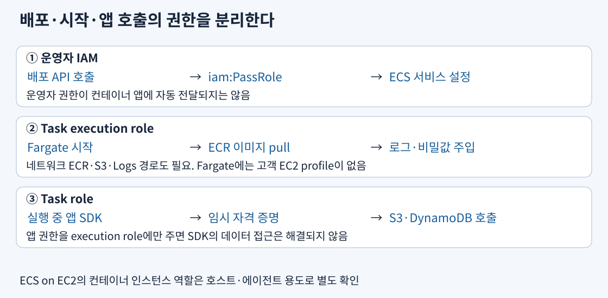
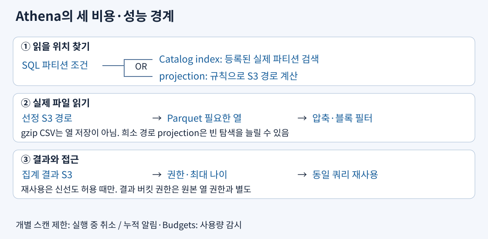

일반 서비스 선택은 본문의 범위다. 아래의 index 속성·작업 의존 유형·체크포인트 옵션은 선택 이유를 구체화하는 보충 구성 사례이며 개별 옵션의 실제 출제 빈도를 단정하지 않는다.
이미지는 실행 파일과 의존성을 담은 배포 단위, ECR은 그 이미지 저장소다. 운영자는 IAM으로 ECS 배포 API를 호출하고 필요 역할을 iam:PassRole로 전달한다. Fargate 시작 계층은 task execution role로 ECR 인증·이미지 다운로드·awslogs 전송·시작 시 비밀 주입을 수행한다. 앱 코드는 별도 task role의 임시 자격 증명으로 S3·DynamoDB를 호출한다. 운영자가 S3 관리자라는 사실이나 execution role에 S3 권한을 줬다는 사실만으로 컨테이너 SDK 호출이 허용되지는 않는다.

ECS on EC2에서는 컨테이너 인스턴스 역할이 에이전트 등록·호스트의 작업에 사용되며 이미지 pull 같은 호스트 에이전트 권한은 시작 유형과 설정에 맞춰 확인한다. Fargate에는 고객이 관리하는 EC2 instance profile이 없어서 호스트 역할에 권한을 추가하는 해결은 적용되지 않는다. EKS의 Fargate Pod execution role 또한 앱에 자동 전달하는 데이터 접근 역할과 다르다. EKS 앱은 지원되는 Pod IAM 방식으로 별도 권한을 구성한다.
비공개 서브넷은 ECR API·이미지 저장 경로·로그·비밀값에 도달해야 한다. 권한이 있어도 NAT 또는 필요한 VPC endpoint·S3 경로·DNS·SG가 없으면 시작 실패한다. 이미지 URI·태그 또는 digest, CPU 아키텍처, 역할, 네트워크를 실제 시작 흐름대로 확인한다. 컨테이너 프로세스가 생겨도 초기 데이터를 읽기 전이라면 ALB 준비 상태 검사는 실패해야 한다. 정상 작업을 유지하는 배포 최소 용량·추가 용량, health check grace period를 초기화 시간과 맞추고 준비된 새 작업에만 요청을 보낸다. 항상 200인 경로와 작업 수 증설만으로 준비 안 된 앱의 응답 실패는 해결되지 않는다.
출처: ECS 역할, 시작 역할, 작업 역할, 서비스 설정, EKS Pod 실행 역할
오케스트레이터는 배포·재시작·원하는 개수를 관리하고 실행 자원은 실제 CPU·메모리를 제공한다. Kubernetes API·기존 Helm·운영 도구 유지가 필수면 EKS를, 그런 요구 없이 AWS 중심의 task/service를 원하면 ECS를 비교한다. 그다음 같은 작업을 EC2와 Fargate 중 어디서 실행할지 결정한다.
| 항목 | ECS on EC2 | ECS on Fargate | EKS on EC2 | EKS on Fargate |
|---|---|---|---|---|
| 배포 단위 | task·service | task·service | Pod·Deployment | 지원 Pod·Fargate profile |
| GPU | 지원 GPU 노드·작업 정의 | GPU 미지원 | GPU 노드·드라이버·스케줄링 관리 | GPU 미지원 |
| 호스트 에이전트 | daemon scheduling 등 검토 | daemon scheduling 미지원 | DaemonSet 사용 가능 | DaemonSet·특권 컨테이너 미지원 |
| 네트워크 | bridge·host·awsvpc 지원 조건 비교 | awsvpc, 작업 ENI·주소 용량 | CNI·노드·Pod 주소 계획 | Pod ENI·프라이빗 서브넷 및 지원 기능 |
| 파일·디스크 | EBS·EFS 등 작업 요구에 맞춤 | 임시 디스크·지원 EFS 등 확인 | EBS CSI·EFS CSI 등 | EBS 마운트 불가, 지원 EFS 정적 구성 확인 |
| 요금·책임 | 노드의 빈 용량·OS·패치·용량 관리 | 요청 자원×실행 시간·추가 저장 등 | 노드 비용+EKS 클러스터·애드온 운영 | Pod 요청 자원+EKS 클러스터, 기능 제약 |
20분 변환 후 모두 버리는 파일이면 영구 EFS를 먼저 붙이지 않는다. ECS Linux Fargate의 임시 저장소는 이미지 계층도 함께 사용하므로 압축·비압축 이미지와 작업 파일 총량을 계산해 지원 플랫폼의 플랫폼 1.4.0 이상 기본 20GiB와 최대 200GiB 확장 설정과 비교한다. 종료 후 보존이나 여러 AZ 작업의 동시 POSIX 공유가 필요하면 요구가 다르다. 지원되는 EFS를 작업에 마운트하고 SG·접근점·파일 권한을 설정한다. 각 작업의 임시 디스크를 늘려도 공유 경로가 생기지 않는다. EKS Fargate와 ECS Fargate의 저장 기능을 같은 것으로 외우지 않는다.
GPU 추론은 EC2 GPU 노드에서 24시간 높은 활용률로 실행하고 중단을 허용하지 않는다고 하자. 별도의 CPU 작업이 월 300시간만 필요하고 동일 성능을 확인했다면 CPU용 EC2 상시 풀과 ECS Fargate 실행 시간 비용을 비교한다. GPU까지 Fargate로 옮기면 기능을 못 맞추고, 모두 Spot으로 옮기면 중단 불가 조건을 못 맞춘다. CPU 작업은 제시된 Fargate 총비용이 낮을 때 분리한다. 반대로 지속 사용 CPU를 EC2에 밀도 있게 배치하면 더 낮을 수도 있다. 같은 리전·성능·구매 옵션·사용률·로그·ALB·NAT·저장·운영 비용을 포함해야 비교가 성립한다.
출처: ECS 시작 유형, Fargate 작업 제약, EKS Fargate 제약, ECS 임시 저장, ECS EFS, 요금
Batch job definition은 이미지·명령·자원·재시도 등 실행 방법이고 job queue는 대기 작업, compute environment는 실행 용량이다. 작업을 제출하면 스케줄러가 준비된 작업을 자원에 배치한다. 1,000개 시료에서 A 전처리 후 B 분석이 필요하면 인덱스로 시료를 식별하는 두 array job을 사용할 수 있다. B에 A의 N_TO_N 의존성을 두면 B[7]은 A[7]의 성공을 기다리지만 A[999]의 완료를 기다리지 않는다.
A 전체 완료에 의존하면 가장 느린 A가 모든 B를 막는다. SEQUENTIAL은 array 내부의 인덱스 순서 의존을 만들므로 독립 시료를 직렬화할 수 있다. 시료별 2,000개 개별 job과 ID를 관리해도 구현은 가능하지만 array가 같은 관계를 더 적은 제출·추적 코드로 표현한다. 재시도는 중간 결과와 최종 쓰기를 멱등하게 만들고, Spot은 재실행 가능한 작업과 완료 시간 조건일 때 선택한다.
Beanstalk는 지원 런타임 앱 버전을 environment에 배포해 EC2·로드 밸런싱·Auto Scaling·상태 관리 등을 조율한다. 지속 웹 환경을 코드 중심으로 배포하려는 요구이며 Batch의 완료되는 유한 작업·의존성 스케줄링과 다르다. Beanstalk 자체 추가 서비스 요금은 없어도 생성된 EC2·로드 밸런서 등의 비용과 앱 데이터·보안 운영은 남는다.
출처: Batch array, job 의존성, Beanstalk
Athena 실행은 SQL 해석 → Catalog의 테이블·파티션 해석 → 읽을 S3 경로·열·블록 선정 → 데이터 스캔·집계 → 결과 S3 저장이다. Glue Crawler는 스키마·파티션 발견, Data Catalog는 그 설명 보관, Glue ETL은 실제 JSON을 정리해 Parquet로 쓰는 변환이다. Crawler를 실행해도 파일 형식이 바뀌거나 스캔 바이트가 자동 감소하지 않는다.

| 수단 | 줄이는 일 | 적합한 데이터·남는 제약 |
|---|---|---|
| 날짜 파티션과 WHERE 조건 | 불필요한 S3 경로 읽기 | 조건 없이 전 기간 조회하면 절감 못 함 |
| Parquet 열 형식·압축 | 필요한 열·블록의 바이트 읽기 | SELECT *는 열 가지치기 이점 감소, 파일 재작성 비용 |
| Partition projection | Catalog의 개별 partition 조회·등록 | 예측 가능한 범위·경로 필요, 빈 조합이 많으면 비효율 |
| Glue partition index | 등록된 partition 메타데이터 탐색 | 데이터 파일 스캔 자체 감소 수단 아님, 등록 계속 필요 |
| 결과 재사용 | 같은 쿼리 재실행 | 신선도·동일 조건·권한·지원 유형 확인 |
연속 날짜·시간 경로이고 빈 시간이 거의 없으면 projection이 범위·경로 템플릿으로 새 파티션 위치를 계산한다. 활성화하면 Athena는 등록 파티션 메타데이터를 무시하므로 잘못된 범위·템플릿은 등록된 데이터도 못 찾게 할 수 있다. 존재하지 않는 날짜×tenant 조합을 대량 계산하는 희소 분포에서는 오히려 빈 S3 경로 탐색이 늘어난다. 등록된 실제 파티션만 관리하는 방식과 index를 비교한다. 규칙성·밀도를 측정하지 않고 모든 테이블에 projection을 켜지 않는다.
파티션 index가 (tenant_id, dt)라면 첫 키 tenant_id 조건이 있어야 index를 활용할 수 있다. 지원 비교 연산·범위 조건을 AND로 묶는 형태를 확인하며 OR·IN·LIKE 같은 일부 표현은 index 필터로 처리되지 않는다. index ACTIVE 상태를 확인하고 Athena 테이블 속성 partition_filtering.enabled=true도 설정한다. index만 만들고 속성을 빠뜨리거나, 첫 키 조건 없이 날짜만 걸면 기대한 메타데이터 최적화가 안 된다. 날짜 범위만 AND 조건으로 조회하고 tenant_id를 지정하지 않는다면 날짜를 선두로 한 index를 구성한다. index의 저장·유지 비용과 새 파티션 등록은 남는다.
예를 들어 매일 1TB×100일의 100개 열 JSON에서 하루의 3개 열만 읽는다면 먼저 날짜 조건으로 읽을 날을 줄이고 Glue ETL로 적절한 크기의 압축 Parquet를 만든다. gzip CSV는 압축 바이트를 줄이지만 행 형식에서 필요한 3개 열만 읽는 구조를 만들지 못한다. 이미 적절한 Parquet인데 조회 전 준비 시간이 긴 경우에는 같은 파일을 재압축하기보다 Catalog 파티션 탐색 지표를 본다. 파일 스캔 병목과 메타데이터 병목은 서로 다른 위치다.
출처: Projection, Glue index 제약, Athena index 설정, 열 기반 형식, 데이터 최적화
Lake Formation은 등록된 데이터의 테이블·열·행 접근을 통제한다. Athena API 실행·Catalog·Lake Formation grant와 통합에 필요한 lakeformation:GetDataAccess, 쿼리 결과 S3·KMS 권한을 함께 준비한다. 원본에 전화번호가 있는데 분석가에게 원본 S3의 광범위한 GetObject를 별도로 주면 SQL의 열 제한을 우회할 수 있다. Lake Formation이 관리하는 접근 경로와 직접 원본 접근을 함께 제한하고 결과 버킷의 다른 사용자 접근·KMS 키·보존도 관리한다. VPC endpoint는 사설 경로이며 열 권한을 대신하지 않는다.
전날 확정 파티션이 안 바뀌고 같은 팀이 같은 SQL을 10분마다 실행하며 1시간 전 값도 허용하면 최대 나이 60분의 결과 재사용을 검토한다. 동일 workgroup·SQL·catalog/database·결과 설정·입력 및 결과 권한 등 조건이 맞아야 한다. 원본 변경을 자동 탐지해 항상 최신으로 돌려주는 캐시로 생각하면 안 된다. LF의 세밀한 권한 등 지원 제한도 확인한다. 입력이 계속 수정되고 최신성이 필수면 재사용 대신 필요한 범위만 새로 읽는다.
실수로 전체 이력을 읽는 한 쿼리를 중단하려면 workgroup의 per-query scan limit을 정한다. 초과 시 취소돼도 이미 읽은 바이트의 비용은 발생할 수 있다. Workgroup 누적 스캔 임계값 알림과 AWS Budgets는 사용량을 알려 주는 별도 통제이며 개별 쿼리를 해당 바이트에서 즉시 중단하는 설정을 대신하지 않는다. 드문 야간 통계는 운영 RDS 읽기 복제본 상시 비용과 S3 추출·ETL·Athena 스캔을 비교할 수 있지만 추출 비용과 하루 지연 허용을 먼저 확인한다.
출처: LF와 Athena, Athena IAM, 결과 재사용, 사용량 통제
EMR Spark 작업은 S3 원본을 읽고 분산 태스크로 조인·집계·특징 계산을 수행해 정제 S3나 지원 대상에 쓴다. 대용량 shuffle, 편중 key, executor 메모리·파일 수가 처리 시간에 영향을 준다. 자체 Spark 라이브러리·실행 환경 제어가 핵심이면 EMR을, 관리형 데이터 통합 흐름이면 Glue ETL을 비교한다. Athena SELECT는 변환 파이프라인 전체와 같은 운영 단위가 아니다.
Redshift는 필요한 열 중심으로 읽는 열 지향 저장과 분산 실행으로 대규모 이력 집계·조인을 처리한다. 주문 쓰기를 처리하는 RDS와 분석을 분리하면 수년치 거래 스캔이 실시간 주문을 방해하는 일을 줄일 수 있다. DynamoDB 전체 Scan은 키 접근의 장점을 살리지 못하고, ElastiCache의 미리 계산한 결과만으로는 수시로 바뀌는 필터의 원본 집계를 처리할 수 없다. S3 비정기 SQL이면 Athena도 비교하지만 반복 분석·동시성·적재 신선도·총비용이 웨어하우스 선택 조건이다.
Redshift는 테이블 행을 여러 노드의 slice에 분산한다. 조인할 두 행이 같은 곳에 있으면 네트워크 재분배를 줄일 수 있다. KEY는 같은 키를 같은 slice에, EVEN은 값을 보지 않고 균등하게, ALL은 전체 테이블 복사본을 각 노드에 배치한다. AUTO는 크기·워크로드에 따라 분포를 조정하는 기본 선택이며 특정 튜닝을 모든 새 테이블에 수동 적용할 이유는 없다.
1TB fact가 customer_id KEY인데 한 고객이 절반이면 그 키가 한 slice를 과부하시킨다. 같은 KEY를 dimension에도 써도 조인 위치는 맞지만 fact skew는 남는다. 이 조건에서는 fact EVEN과 작은 500MB dimension ALL을 비교할 수 있다. 큰 fact는 고르게 분산하고 각 노드의 작은 표와 조인해 재분배를 줄인다. 두 표 모두 EVEN이면 조인 중 이동이 남고, fact까지 ALL이면 대량 복제의 저장·적재 비용이 커진다. ALL이 적합한지는 표 크기와 갱신 빈도, 실측 계획으로 판단한다. sort key는 스캔 범위 개선이지 같은 키의 분포 편중을 고치는 스위치가 아니다.
매시간 적재 후 같은 상품·일자 SUM/JOIN을 여러 필터로 반복 조회하면 materialized view에 공통 집계를 저장하고 적재 후 refresh한다. 일반 view는 SQL 정의만 저장해 조회 때 계산하고, 결과 캐시는 유효한 동일 쿼리 결과를 재사용하므로 서로 다른 필터의 공통 중간 집계와 다르다. WLM 우선순위는 대기·자원 배분을 바꾸고 계산량 자체를 없애지는 않는다. materialized view는 refresh 비용·저장 공간과 마지막 갱신 시각을 관리하며 항상 실시간인 것으로 표시하지 않는다.
OpenSearch는 문서의 토큰을 검색 인덱스로 만들어 전문 검색·필터·로그 탐색을 빠르게 한다. 원본 S3 장기 보관과 검색 색인 보관·복제 비용을 구분한다. RDS의 거래 무결성이나 Redshift의 대규모 반복 집계와 목적이 다르다. Amazon Quick의 BI 기능 Amazon Quick Sight는 Athena·Redshift 결과를 시각화한다. 추출·캐시 새로 고침이 늦으면 화면도 늦으며 BI가 원본 수집·ETL·스트림 보존을 대신하지 않는다.
출처: EMR, 열 저장, Redshift 분포, 분포 평가, Materialized view, refresh, OpenSearch, Quick
생산자는 partition key로 레코드를 보내고 키의 해시가 shard를 정한다. Provisioned의 shard 쓰기는 기본적으로 초당 1MB 또는 1,000레코드 한도 중 먼저 닿는 조건을 본다. 인기 키 하나가 집중되면 shard를 늘려도 그 키가 여러 shard로 자동 분산되지 않는다. 키 설계·분산과 키별 순서 요구를 함께 바꿔야 한다. 짧은 burst도 제한 오류·생산자 재시도를 관찰하고 on-demand의 확장 동작·현재 한도를 확인한다.
공유 GetRecords 소비자는 shard당 2MB/s 읽기 처리량을 함께 사용한다. 소비자 둘이 각 1.5MB/s를 요구하면 합계 3MB/s여서 polling을 더 자주 해도 대역폭이 늘지 않는다. Enhanced fan-out(EFO)은 등록 소비자마다 shard당 전용 최대 2MB/s와 SubscribeToShard push를 제공한다. shard 수를 유지하면서 독립 읽기·짧은 전달 지연이 필요하면 EFO를 비교하되 소비자 요금도 포함한다. EFO는 생산 쓰기 hot key를 해결하지 않는다.
KCL은 lease 테이블로 shard 처리 담당자를 조율하고 checkpoint에 마지막 처리 위치를 기록한다. 재시작은 유효한 checkpoint 이후에서 이어지며 처리 성공 뒤 checkpoint 전에 장애가 나면 같은 이벤트를 다시 읽는다. 업무 쓰기는 이벤트 ID·조건부 쓰기 등으로 중복 효과를 막는다. 소비자 숫자만 늘리면 하나의 shard 처리를 무한히 병렬화할 수 있는 것은 아니다.
48시간 계획 중단 동안 유입이 계속되면 중단 전에 보존을 48시간+재처리 여유보다 길게 늘리고 checkpoint·lease 상태를 유지한다. 재시작 후 소비 속도는 새 유입량보다 커야 밀린 양을 줄인다. 이미 보존 밖으로 사라진 레코드는 나중에 보존을 늘려도 되살아나지 않는다. LATEST는 새 위치 이후부터여서 누락을 만들고 TRIM_HORIZON은 현재 남은 가장 오래된 데이터부터여서 불필요한 재처리를 만들 수 있다. 둘은 기존 checkpoint를 올바르게 이어가는 것의 대체물이 아니다.
출처: Streams 한도, EFO, KCL, 보존 기간, 중복 처리
Data Firehose는 입력 레코드를 버퍼링해 S3 등 지원 목적지에 전달한다. Lambda 변환은 지원 형식의 레코드를 수정할 때 쓰고, 지원 스키마 기반 JSON→Parquet/ORC 변환은 별도 형식 변환 기능이다. 이미 S3에 있는 과거 파일 전체를 새 형식으로 바꾸는 작업은 Glue·EMR·Athena CTAS 같은 별도 변환을 검토한다. Firehose 설정 변경이 기존 S3 파일을 소급 변환하지 않는다. 시간·크기 버퍼·오류 경로·재시도에 따라 지연이 있으므로 500ms 독립 분석 소비나 임의 과거 위치 재생이 핵심이면 Data Streams와 다르다.
MSK는 Kafka 프로토콜·토픽·파티션·기존 생산자/소비자 생태계를 유지할 때 선택한다. Kafka를 쓰지 않는다는 이유만으로 무조건 비효율적이라고 할 수는 없지만 호환 요구가 없다면 운영·비용·기능을 Data Streams와 비교한다. SQS는 작업자 중 하나가 메시지를 처리하는 큐이며 여러 독립 분석 앱이 각 위치로 같은 보존 이력을 반복 읽는 스트림과 다르다.
Salesforce→AppFlow→S3 원본→Glue 정제 Parquet→Catalog→Athena→Quick BI 흐름에서 입력은 SaaS 객체이고 출력은 S3 파일, 정제 결과, SQL 결과, 시각화로 차례로 달라진다. AppFlow 최초 전체 이력 뒤 신규와 수정분만 반영하려면 커넥터가 지원하는 수정 시각 LastModifiedDate를 증분 기준으로 쓴다. CreatedDate만 쓰면 기존 거래 금액 수정은 놓친다. S3에 SSN 저장 자체가 금지면 전송 매핑에서 제외한다. 먼저 적재한 뒤 Glue로 지워도 원본에 금지 필드가 남는다. 커넥터 지원 필드·timestamp·지연 offset·삭제 전파는 따로 확인한다.
출처: Firehose, 형식 변환, MSK, AppFlow 전송, Salesforce
| 서비스 | 구체적 입력 → 출력 | 결과 다음에 필요한 업무 |
|---|---|---|
| Comprehend | 상담 텍스트 “배송이 늦다” → 감정·개체·분류와 점수 | 지원 언어 확인, 점수 낮은 분류 검토 |
| Lex | “내일 부산행 두 장” 음성/텍스트 → 예약 intent와 날짜·목적지·인원 slot | Lambda 등 백엔드가 재고 확인·실제 예약 |
| Polly | 안내 텍스트 → 합성 음성 스트림·파일 | 발음·음성·언어를 확인해 안내 재생 |
| Rekognition | 업로드 사진/지원 영상 → 객체·콘텐츠 분석 label·confidence | 업무별 threshold, 경계 사례 사람 검토 |
| Textract | 송장 이미지/PDF → 글자·표·양식·좌표·confidence | 합계·거래처·주문 대조, 낮은 신뢰도 검토 |
| Transcribe | 상담 오디오 → 전사 텍스트·타임스탬프 등 | 잡음·화자·고유명사를 검수 |
| Translate | 한국어 문장 → 대상 언어 텍스트 | 도메인 용어·중요 약관 검수 |
| SageMaker AI | 학습 데이터·학습 코드 → 모델 artifact, 배포 후 입력 특징 → 추론 | 목표·학습/검증 분리·성능·편향·배포 운영 |
음성 상담을 외국어 텍스트로 바꾸려면 Transcribe의 전사 다음 Translate의 번역을 연결한다. Polly는 글자를 음성으로 만드는 반대 방향이어서 음성 인식의 대안이 아니다. Textract는 문서 구조 추출이고 Comprehend는 추출된 문장 분석이므로 입력이 스캔 이미지뿐이면 Comprehend만 호출해 표를 읽을 수 없다. Lex가 의도를 분류해도 재고 확보나 결제는 완료되지 않는다.
송장 pipeline은 S3 업로드→Textract→숫자·통화·합계 검증→기준 미달은 검토 대기→승인 결과만 DB 반영으로 구성한다. confidence는 특정 결과에 대한 모델 점수이며 업무상 정답 확률이나 합법적 자동 승인의 보증이 아니다. 목적별 API로 충분한데 자체 모델부터 학습하면 데이터 라벨링·평가·호스팅 부담이 늘어난다.
SageMaker training job은 학습 중 실행 자원·시간, 모델 저장·데이터 처리에 비용이 들고 real-time endpoint는 요청이 없어도 프로비저닝된 인스턴스 실행 비용이 발생할 수 있다. 비실시간 대량 예측은 batch transform, 지원 조건에 맞는 간헐 요청은 serverless inference 등을 비교한다. 모델을 S3에 저장했다고 API endpoint가 실행되는 것은 아니다. 학습용 GPU와 추론용 자원은 서로 다른 사용 패턴으로 조정하고 모델 정확도뿐 아니라 지연·처리량·상시 비용을 검증한다.
출처: Comprehend, Lex, Polly, Rekognition, Textract confidence, Transcribe, Translate, SageMaker inference, 요금
Amazon Quick의 BI 기능은 Amazon Quick Sight이며 과거 문서의 QuickSight API·SDK와 기존 연계는 계속 사용된다. 시각화 전략은 차트 종류뿐 아니라 언제 어느 저장소를 읽어 어떤 시점의 값을 보여 줄지 정하는 일이다. 원본 SQL을 호출하는 direct query와 데이터를 BI용 엔진에 가져오는 SPICE를 구별한다.
| 선택 | 화면 조회 흐름 | 신선도·원본 부하·동시성 | 비용과 실패 경계 |
|---|---|---|---|
| Direct query | 사용자가 화면 열기·새로 고침 → 연결된 Athena·Redshift·DB 조회 → 시각화 | 조회 시 원본에 보이는 데이터를 사용하지만 원본 수집 지연·실행 시간은 남음. 다수 사용자·필터 요청이 원본 동시 쿼리와 부하를 늘림 | BI 요금 외 원본 쿼리·스캔·컴퓨팅 비용. 원본 장애·네트워크·쿼리 지연이 화면에 영향 |
| SPICE 추출 | 예약·API ingestion → 원본에서 가져와 SPICE 저장 → 사용자는 저장된 추출본 조회 | 같은 추출본을 많은 사용자가 반복 조회해 원본 부하를 줄임. 마지막 성공 갱신 이후 변경은 아직 보이지 않음 | BI 요금·SPICE 용량·갱신 때 원본 읽기 비용. 용량·권한·스키마 오류가 갱신 실패를 일으킬 수 있음 |
예를 들어 주문 운영팀은 방금 들어온 미처리 주문을 확인해야 하고 영업 300명은 어제 확정된 지역별 매출을 아침마다 비교한다고 하자. 전자는 최신 원본을 조회하는 경로를 후보로 삼되 쿼리 지연·동시성·원본 DB 보호를 검증한다. Direct query도 대시보드가 계속 열린 상태에서 모든 변화가 즉시 push된다는 의미는 아니므로 화면 갱신 동작과 수집 시각을 확인한다. 원본에 적재되지 않은 주문은 직접 조회로도 보이지 않는다. 초 단위 운영 감시가 필요하면 별도의 운영 조회 경로·갱신 주기를 포함해 설계한다.
후자는 일일 집계가 끝난 뒤 SPICE를 갱신하면 같은 원본 집계를 300명이 반복 실행하는 부담을 줄일 수 있다. SPICE를 매초 다시 적재해 운영 화면처럼 만들면 추출 비용과 갱신 지연이 늘어 요구에 맞지 않을 수 있다. 반대로 하루 전 확정 매출만 필요한 모든 조회를 운영 DB에 직접 보내면 불필요한 동시 부하가 생긴다. 두 화면에 같은 저장·새로 고침 방식을 강제하지 않고 허용 데이터 나이와 사용자 수, 필터 패턴, 원본 비용을 먼저 정한다. SPICE는 데이터 자체를 가져오므로 저장 공간을 쓰고, Athena 원본을 새로 적재할 때는 그 읽기 스캔 비용도 남는다.
갱신 실패 흐름도 설계한다. 06시 매출 적재 → 06시 10분 SPICE 갱신 → 06시 20분 화면 공개인데 DB 열 이름이 바뀌어 ingestion이 실패했다고 하자. 06시 20분에 화면을 열었다는 사실을 데이터의 06시 10분 갱신 성공으로 표시하면 안 된다. 기존 성공 추출본이 표시되는 상황에서도 이전 데이터일 수 있으며, 첫 적재부터 실패하면 사용할 성공 데이터 자체가 없을 수 있다. 파이프라인의 마지막 성공 갱신 시각과 데이터의 최신 업무 시각을 별도로 관리해 화면에 제공하고 허용 나이를 초과하면 오래된 자료임을 명시한다. 이는 표시 설계이지 Quick Sight가 사용자 정의 신선도 문구를 자동으로 만들어 준다는 뜻은 아니다.
운영자는 ingestion 이력·오류 코드·CloudWatch ingestion 실패 지표와 dataset 소유자 갱신 실패 알림을 확인한다. 스키마 변경이면 dataset 정의, 권한 오류면 원본 연결 역할·자격 증명·네트워크, 용량 오류면 SPICE 사용량을 조사한다. 원인을 고치고 다시 갱신한 뒤 행 수·집계 합계와 성공 시각을 확인한다. SQL 원본의 incremental refresh는 지정한 look-back 창만 다시 읽으므로 창 밖의 오래된 매출 정정이 생기면 별도 재적재·전체 갱신이 필요하다. 새로 고침 횟수만 늘려도 창 밖 정정이 자동으로 포착되지는 않는다.
지역 담당자에게 자기 지역 매출만 보여 주려면 지원 edition의 dataset **row-level security(RLS)**에 사용자·그룹과 지역 규칙을 연결한다. 이는 Quick 독자가 볼 행의 통제다. Quick의 원본 접근 IAM 역할·S3/KMS·DB 연결 권한은 데이터를 가져올 서비스 경로의 통제이므로 서로 대신하지 않는다. 화면 필터만 숨기면 행 권한이 되지 않는다. 원본 S3 직접 읽기를 넓게 허용하면 별도 우회 경로가 남는다. 독자와 dataset 소유자의 권한 차이도 확인하고, 지역 사용자 계정으로 다른 지역 행이 보이지 않는지 실제 조회를 검증한다.
출처: 현재 Quick와 Quick Sight 명칭, SPICE와 원본 조회 비용, Direct query·갱신과 실패 알림, SPICE 갱신·증분 창, 오류 코드, CloudWatch 지표, RLS
시계열은 측정값과 그 값이 발생한 시각을 함께 다루는 데이터다. 센서 수가 많아지면 작은 레코드의 반복 쓰기, 최근 구간 읽기, 수년치 추세 읽기가 서로 다른 비용을 만든다. 요구가 “장치 하나의 최근 10분 고해상도 조회”인지 “모든 공장의 지난 2년 일별 추세”인지에 따라 저장과 읽기 경로를 나눈다. 아래는 저장 계층 분리 원리이며 특정 시계열 서비스의 신규 사용을 전제하지 않는다.
1만 장치가 초당 한 번 온도를 보내면 하루 8억 6,400만 측정값이다. 장치마다 분 단위로 집계하면 하루 1,440만 구간으로 레코드 수는 60분의 1이 된다. 이것이 요금 60분의 1을 보장하지는 않는다. 집계 열·압축·색인·쓰기 단위·조회·중복 보관 비용이 다르기 때문이다. 원본은 최근 7일의 장애 분석에, 분·시간·일 집계는 긴 추세에 사용한다는 보존 정책을 예로 들 수 있다. 최근 조회에 맞는 지원 DB 또는 검색 계층과 S3 원본/집계 Parquet를 조합하고, 기한별 S3 수명 주기를 정한다. 기존 원본을 언제 지워도 되는지는 재계산·감사·사고 분석 요구와 별도로 합의한다.
| 요구 | 예시 경로 | 비용 절감과 잃는 것 |
|---|---|---|
| 장치 하나의 최근 10분 | device_id와 event timestamp 범위를 지원하는 저장·색인 |
장치·시간 범위로 읽을 양을 제한. 모든 장치 원본을 매번 전체 Scan하면 불리 |
| 공장별 월간 추세 | 처리 작업이 시간·일 집계 생성 → S3 Parquet → Athena·BI | 반복 원본 스캔을 줄임. 집계 생성·저장 비용과 갱신 지연 발생 |
| 과거 사고의 초 단위 재조사 | 보존 중인 원본 S3를 필요한 날짜·장치 범위로 조회 | 고해상도 정보 보존. 장기 원본 저장과 드문 재조회 비용을 부담 |
Downsampling은 여러 시점의 값을 더 큰 시간 구간으로 줄이는 것이다. 평균만 저장하면 짧은 과열 최고값을 놓칠 수 있으므로 count·sum·min·max 등 필요한 통계를 정한다. 여러 구간의 평균을 다시 평균내면 각 구간의 표본 수가 다를 때 틀릴 수 있다. 합계와 건수를 보관해 전체 sum / 전체 count를 계산하고, 정확한 백분위가 필요하면 필요한 원본이나 적합한 병합 가능 통계 방식을 따로 유지한다. 일 집계만 남긴 뒤 “어제 03시 12분에 최고 온도가 언제였나”를 완전히 복원할 수는 없다.
입력은 device_id, event_time, ingest_time, event_id, 측정값·단위를 구분한다. Event time은 실제 발생 시각, ingest time은 AWS에 들어온 시각이라 오프라인 장치가 늦게 보낸 값은 둘이 다르다. 수집 시각으로만 일별 합계를 만들면 어제 측정값이 오늘 실적으로 들어간다. 시간대·단위를 정규화하고, 재전송은 event ID 또는 장치·시퀀스 조합으로 중복 효과를 제거한다. 장치 ID만 키로 써서 최신 값으로 덮어쓰면 이력 자체가 사라지므로 저장 모델의 키에 시간·이벤트 식별을 포함할지 결정한다.
집계는 event time 구간별로 만들고 지연 도착을 허용하는 재계산 창을 둔다. 예를 들어 1시간 집계를 매시간 갱신하되 최근 24시간을 다시 계산하면 하루 이내 늦은 값과 수정은 반영할 수 있다. 창을 넘긴 데이터는 별도 backfill 대상이며 같은 집계 키를 무조건 더하는 대신 해당 구간을 올바르게 대체·upsert하는 방식으로 중복 합산을 막는다. 창을 길게 하면 정합성 보완 범위가 넓지만 반복 읽기·계산 비용이 늘고, 창이 짧으면 비용은 줄어도 늦은 데이터가 빠질 수 있다. 원본 보존은 이 재처리 창과 장애 복구 여유보다 짧게 설정하지 않는다.
S3 분석 계층은 일반적인 시간 범위 조회를 기준으로 날짜 파티션과 압축 Parquet를 구성한다. 장치 수만큼 무조건 S3 파티션·작은 파일을 쪼개면 목록·요청·메타데이터 비용이 늘 수 있다. 장치 키의 조회 분포·데이터량을 측정해 정렬·파일 통합 등과 비교한다. 전체 비용은 수집 요청, 최근 DB의 쓰기·읽기·색인·저장, S3 PUT·저장·전환/복원, Glue/EMR 집계, Athena 스캔, BI 갱신을 합산한다. 작은 파일 압축만 하고 모든 보고서가 전체 기간 원본을 계속 읽으면 장기 스캔 비용의 원인은 남는다.
Timestream for LiveAnalytics의 계층·보존·집계 개념은 이런 원리를 보여 주는 기존 서비스 사례지만, 2025년 6월 20일부터 신규 고객 접수가 중단됐다. 신규 설계는 현행 사용 가능한 DB·S3 분석 경로의 지연·쿼리·보존·운영·가격을 비교하며 이름만 보고 해당 서비스를 필수 선택으로 삼지 않는다. BI는 최근 조회와 장기 집계를 서로 다른 신선도로 표시하고 마지막 집계 완료·데이터 범위를 노출해야 비용 절감을 최신성 향상으로 오해하지 않는다.
출처: Athena 파티션·파일·정렬 최적화, S3 수명 주기, 집계와 원본 보존 분리의 서비스 사례, 지연 도착·정정 재계산, Timestream 제공 변경
공식 자료 확인일: 2026-11-02